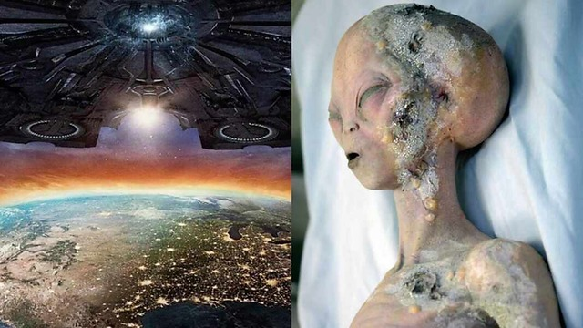
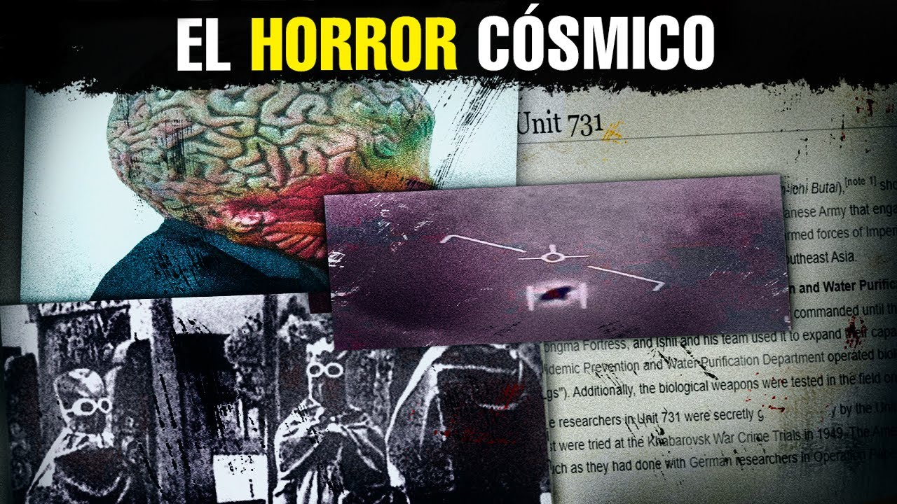
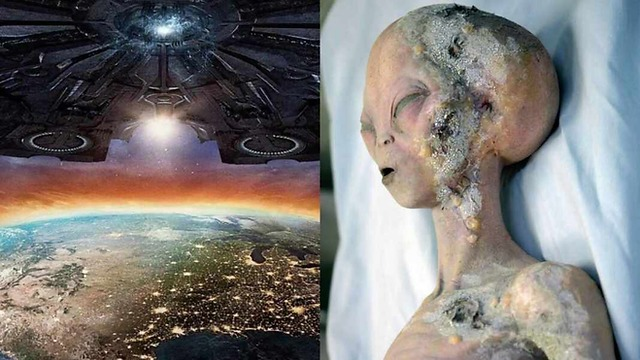
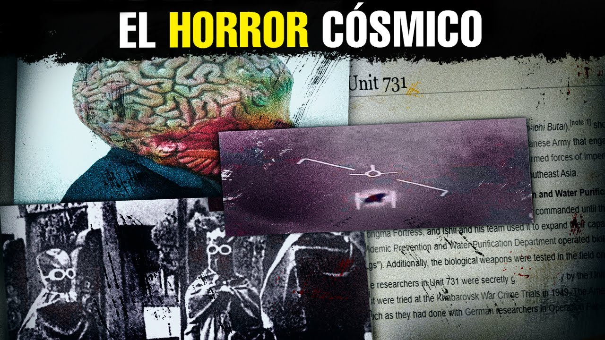

El video aborda la fascinante interrogante sobre la posible existencia de vida extraterrestre en el universo, utilizando como punto de partida la Paradoja de Fermi, que plantea la aparente discrepancia entre la alta probabilidad de que existan otras civilizaciones en el cosmos y la falta de evidencia concluyente de su presencia. En este contexto, se introduce la "Hipótesis del Bosque Oscuro" como una teoría que ofrece una perspectiva intrigante sobre por qué no hemos detectado señales de vida alienígena hasta ahora. Esta hipótesis postula que las civilizaciones avanzadas podrían optar por ocultarse deliberadamente en el vasto universo, adoptando una estrategia de mantenerse en silencio y evitar el contacto con otras formas de vida inteligente. Esta actitud se fundamenta en el principio de la supervivencia cósmica, donde la necesidad de preservar la propia existencia prevalece sobre cualquier deseo de establecer comunicación intergaláctica. Además, se plantea que la desconfianza mutua entre las civilizaciones, la incertidumbre sobre las intenciones de los demás y la distancia física en el espacio pueden exacerbar la reticencia a revelar la propia presencia. El concepto toma su nombre de la novela "El Bosque Oscuro" del autor chino Liu Cixin, donde se presenta una visión inquietante de un universo lleno de civilizaciones en ocultamiento, cada una acechando en la oscuridad cósmica por temor a ser descubierta y aniquilada por otras. Esta metáfora ilustra la precaución necesaria en un entorno interestelar donde las amenazas son desconocidas y los riesgos son elevados. Además, se examina la paradoja inherente en los esfuerzos humanos por comunicarse con posibles formas de vida extraterrestre, destacando la importancia de considerar las posibles consecuencias de revelar nuestra ubicación en el cosmos. Se reflexiona sobre la limitada evidencia de intentos de contacto interestelar y se plantea la posibilidad de que otras civilizaciones ya estén conscientes de nuestra existencia, lo que añade una capa adicional de complejidad a la búsqueda de vida en el universo.
La hipótesis del Bosque Oscuro surge como una explicación a la aparente falta de contacto con civilizaciones extraterrestres, planteando que estas podrían optar por permanecer ocultas para evitar conflictos y garantizar su supervivencia.
Se exploran diversas razones por las cuales las civilizaciones extraterrestres podrían optar por permanecer en secreto, como el deseo de ser los primeros en el universo, la evasión del contacto intencional, la distancia tecnológica entre civilizaciones y la posibilidad de un Gran Filtro que limite la supervivencia a largo plazo.
La hipótesis toma su nombre de la novela "El Bosque Oscuro" de Liu Cixin, donde se compara el universo con un bosque donde las civilizaciones actúan como cazadores que se ocultan para evitar ser descubiertas y potencialmente aniquiladas por otras civilizaciones. Esta metáfora ilustra la idea de que revelar la presencia puede ser peligroso en un entorno cósmico lleno de incertidumbre y posibles amenazas.
Es la aparente contradicción entre la alta probabilidad de existencia de civilizaciones extraterrestres en el universo y la falta de evidencia observable de contacto con dichas civilizaciones.
Según la hipótesis del Bosque Oscuro, la supervivencia es la necesidad principal de las civilizaciones en el cosmos, lo que podría motivarlas a permanecer ocultas para evitar conflictos que pongan en riesgo su existencia.
Este concepto describe cómo la demora en la comunicación interestelar y la incertidumbre sobre las intenciones de otras civilizaciones pueden generar desconfianza y aumentar la probabilidad de conflictos, lo que lleva a una situación de ocultación y precaución en el universo.
What is the Dark Forest Theory. New Hampshire Public Radio. Consultado el 18 de octubre de 2022.
Hsu. Jeremy (31 de octubre de 2015). China's 'Dark Forest' Answer to 'Star Wars' Optimism. Discover. Archivado desde el original el 17 de octubre de 2022.`
Liu, Cixin (2015). The Dark Forest. Nueva York.
 


